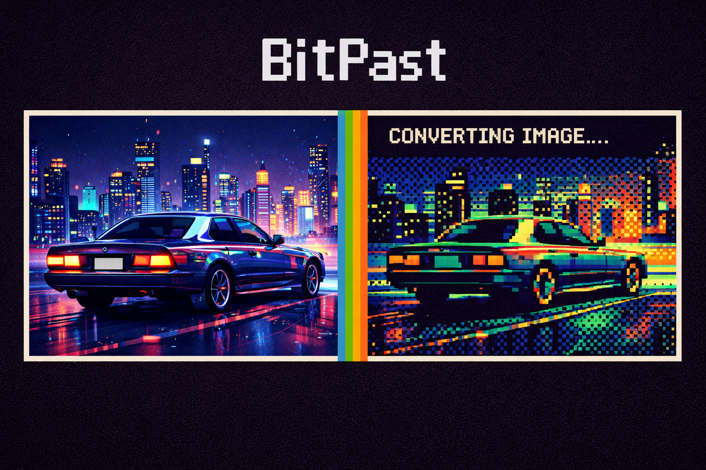
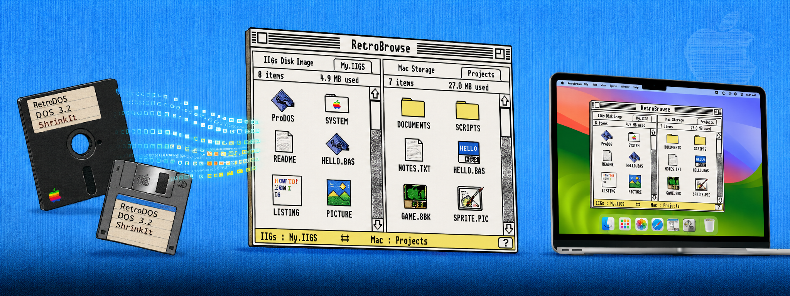
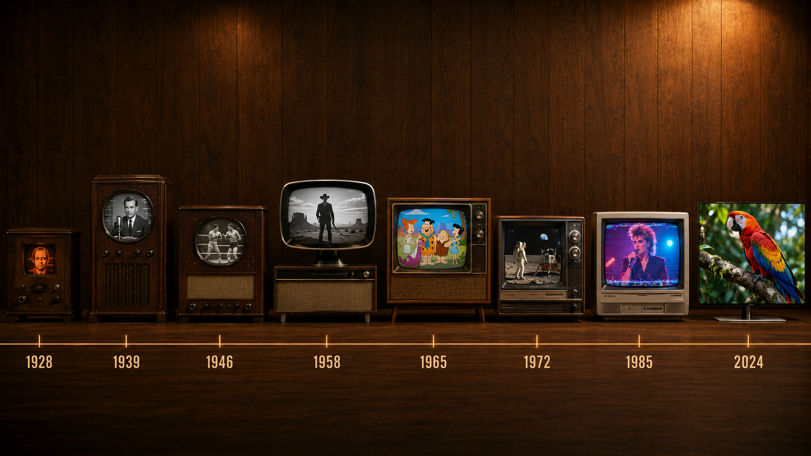
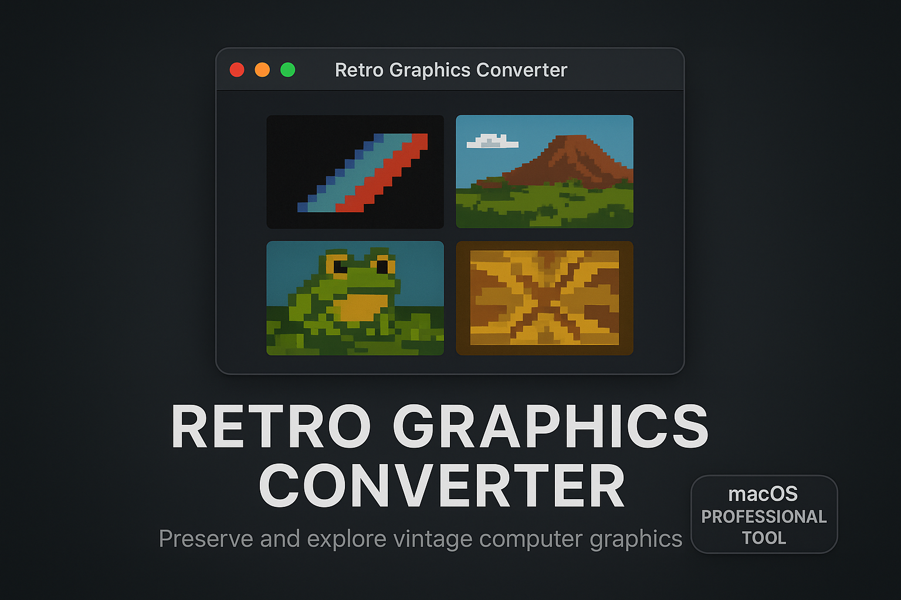

Apps

Watch modern videos rendered live through real-time retro computer graphics — Apple II, Commodore 64, Game Boy, NES, MSX, CGA, and more. Stream from the Internet Archive or your own library.
Learn More →
Transform modern images into authentic retro computer graphics. Supports Apple II, Apple IIgs, Commodore 64, Amiga, Atari, ZX Spectrum, and more — with native file formats and hardware palettes.
Learn More →
A modern macOS dual-pane file manager for Apple II disk images — ProDOS, DOS 3.3, UCSD Pascal, ShrinkIt, Binary II. Inspect BASIC, graphics, fonts, icons, AppleWorks, and Teach documents inline.
Learn More →
Eight decades of television history in one macOS app — from the mechanical 1928 Baird to the latest OLED. Apply authentic period CRT effects, scan lines, and colour rendering to any video.
Learn More →
Convert images to authentic retro platform graphics and native file formats. Faithful to each system’s hardware constraints — palette limits, colour clash rules, and native resolutions.
Learn More →
Convert any image to text-mode ASCII art on fifteen classic platforms — Apple II, Commodore, Atari, Amiga, MS-DOS, and more — rendered with each system’s real font, hardware palette, and screen aspect.
Learn More →